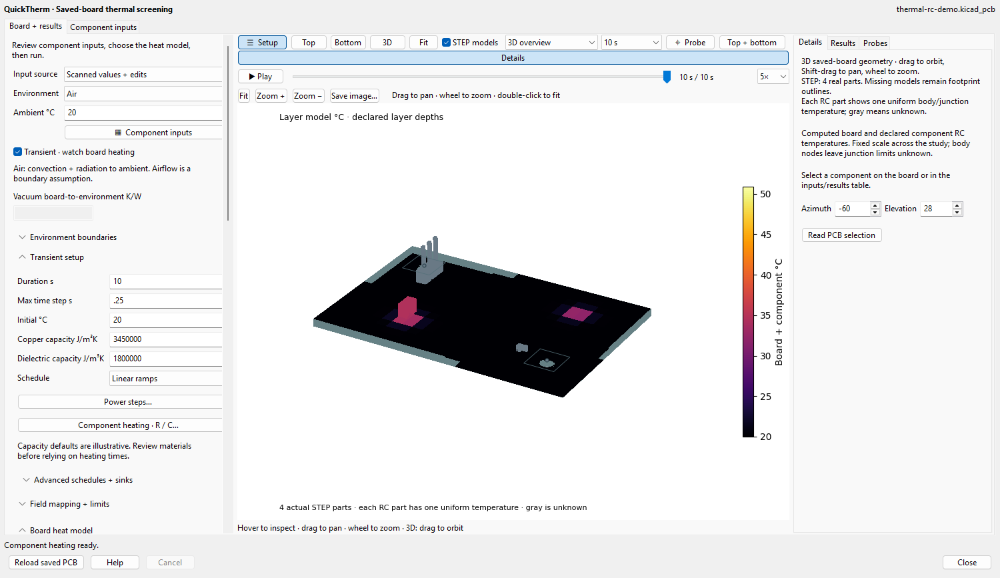
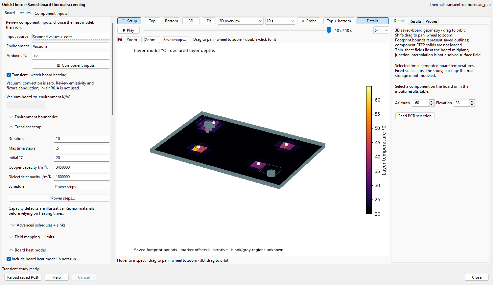
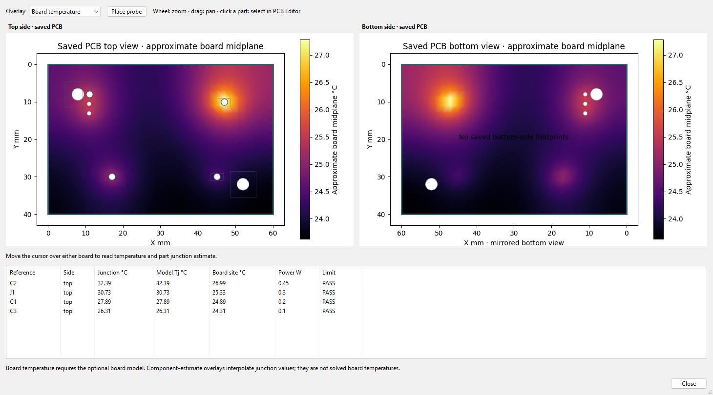
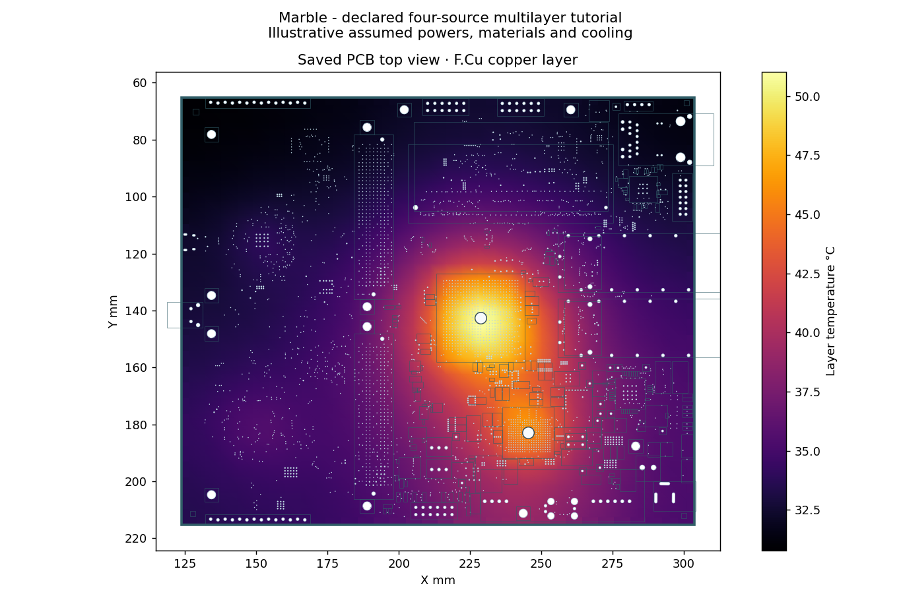
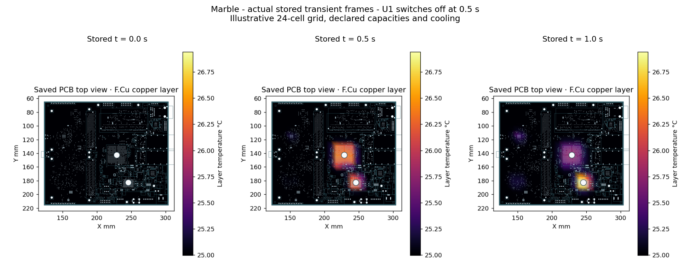
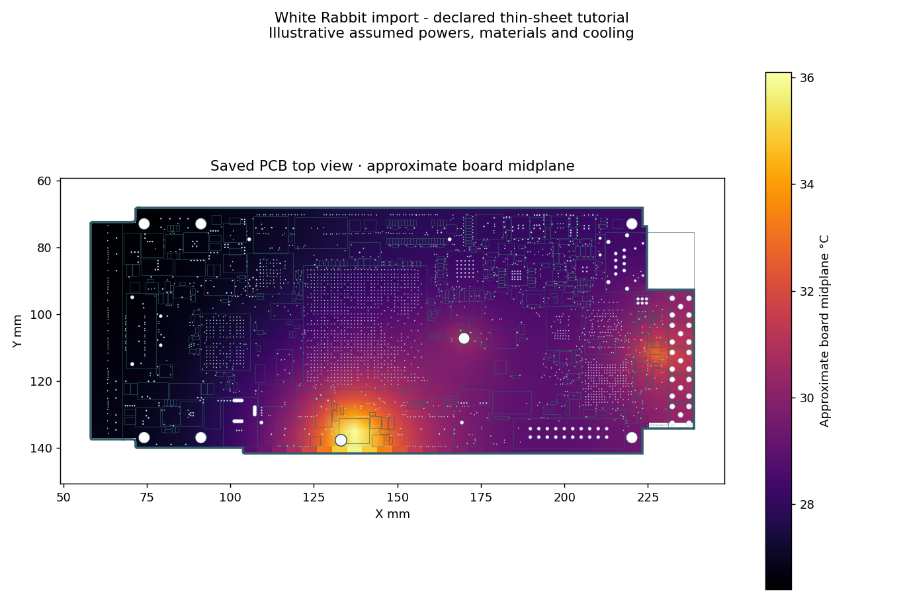

QuickTherm reads a saved KiCad PCB and performs component, board and scheduled transient thermal screening. It is independently installable and does not require Quick PI. Thermal inputs entered in its workspace do not change the PCB. This guide describes the current 3.6.41 workflow. Screenshots retain their capture versions and stated assumptions; older images are not new validation runs.
The simple air equation is Tj = Tamb + P × RθJA. For example, 0.5 W with 40 K/W at 25 °C gives 45 °C. This is an equation example, not a hardware result.
This native public-demo capture shows four included hypothetical heat sources. The two mounting footprints are excluded. It precedes the solve; no measured hardware temperatures are shown. Capture inputs.
| Input | Meaning and units | How to enter it |
|---|---|---|
| Power | Actual heat generation, W | Bare 0.5, 500mW, or 1 W; explicit zero is permitted |
| RθJA | Junction-to-ambient resistance for the characterized assembly, K/W | Air component screen; do not reuse an air rating in vacuum |
| RθJB | Junction-to-board equivalent path, K/W | Board-site-to-junction estimate; not a general package-solid model |
| RθJC | Junction-to-case resistance, K/W | Virtual heatsink path with separate contact and sink resistances |
| Tmin / Tmax | Allowed junction temperature, °C | Map the selected saved property names or enter detached overrides |
| Included | Study scope | Hidden checked rows still participate after filtering |
Use Field mapping… for nonstandard or ambiguous saved footprint property names. Unique recognized aliases may be suggested automatically; review them. Property-name mappings refer to saved footprint fields, not schematic fields that have not been transferred and saved to the PCB.
A computed board-site temperature is not automatically a junction temperature. Without a valid package path, Tj and its limits stay UNKNOWN. A body RC node also does not qualify a junction limit. Read per-part decisions and coverage; missing limits never silently pass. The CLI can require every scoped limit to pass.
| Model | Choose it when | Required evidence and important limits |
|---|---|---|
| Component-only air | You have RθJA at relevant conditions | Independent Tamb + P RθJA; no board spreading or coupling |
| Component-only vacuum | You have a reviewed board-to-environment path | Shared isothermal board node plus each RθJB; no spatial board field |
| Virtual heatsink | A specific part has a characterized sink path | RθJC + contact + environment-specific RθSA; no automatic parallel PCB path |
| Thin sheet | You need an approximate whole-board spreading map | Effective in-plane conductivity, saved thickness and cooling; one midplane field |
| Copper layers + vertical paths | Layer copper and supported pad/via/mount paths matter | Saved stackup, filled copper, conductivities, plating, mesh and boundaries |
| CalculiX 3D · fixed lower face | A supported fixed-temperature lower-face conduction study | Gmsh/ccx, explicit mesh/materials; strong geometry and boundary restrictions |
| Component heating · R / C | Finite equivalent package/body storage is needed | Reviewed meaning, resistance, capacity and optional physical paths |
Use Board model… or expand Board heat model, enable Include board heat model in next run, and choose the model before running. Existing mapped fields and entered powers remain yours to review. Unknown inputs are not inferred from colors, STEP geometry, package name or electrical dielectric constant.
For a thin sheet, enter effective conductivity in W/(m·K), board emissivity, airflow assumptions and mesh size. Top and bottom show the same midplane field; they are not two independent surface solutions. The saved board supplies thickness.
For Copper layers + vertical paths:
Circular and rotated obround plated slots have supported reduced contact/barrel representations in the internal multilayer model. A diagnostic coarse contact proxy is not resolved geometry: review its warning and mesh acceptance. Models omit airflow fields, detailed package gradients and radiation view factors.
Choose the environment, then expand Environment boundaries. Expanded modes use the layer-resolved model and explicit boundary parameters; the simple RθJA air calculation is not a sealed-enclosure or potting calculation.
| Environment | Review these inputs | What is not calculated |
|---|---|---|
| Air | Ambient, airflow and emissivity | Airflow is not solved; the simple board approximation uses h = 5 + 4v W/(m²·K) |
| Vacuum | Zero convection, emissivity and/or fixture conduction | Residual gas, chamber view factors and installed contact quality |
| Forced air | Explicit effective convection h in W/(m²·K), ambient and radiation | Fan operating point and CFD velocity field |
| Potting | Conductivity W/(m·K), thickness mm and outer h | Full encapsulant geometry or local voids; the boundary is an equivalent series path |
| Sealed enclosure | Explicit h and prescribed enclosure temperature | Enclosure wall warmup, recirculation and external cooling are not solved |
Vacuum disables airflow/convection. The board workflow requires a solvable steady heat rejection path even for a transient run: nonzero radiation or a real fixture path. Do not substitute an air heatsink rating for vacuum performance. A fixed enclosure temperature assumes something outside the model maintains it.
For CLI board configurations, these settings belong inside thermal_network_settings: board_h_w_m2k for forced air; that coefficient plus enclosure_temperature_c for sealed; potting_k_w_mk, potting_thickness_mm and potting_outer_h_w_m2k for potting. Set top-level environment to forced_air, sealed or potting and thermal_model_kind to multilayer. Review the effective boundary recorded in the result rather than assuming these modes load a material database.
Open Heatsinks…, choose a component, select straight fins, pin fins, radial fins, flat plate or resistance-only, and enter positive contact resistance plus air and/or vacuum sink-to-environment resistance. Assign/update, then confirm. Remove the assignment to return to its ordinary component path.
Shape dimensions in mm describe the visual envelope, not a rated product. They do not determine thermal resistance. Board-model sinks also need explicitly entered exposed area; a fin envelope is not fin area. Airflow and thermal data must match the actual environment. The lumped relation is Tj = Tamb + P × (RθJC + Rcontact + RθSA).
For CLI use, an illustrative sinks.json mapping is:
{
"U1": {
"shape": "straight_fin",
"width_mm": 40,
"depth_mm": 40,
"height_mm": 15,
"contact_k_per_w": 0.2,
"theta_sa_air_k_per_w": 8,
"theta_sa_vacuum_k_per_w": 20
}
}Pass --heatsinks sinks.json --theta-jc-field RthetaJC --thermal-refs U1 with the ordinary board/power/environment arguments. Replace these hypothetical values with characterized data. Components without assigned sinks still need the normal RθJA/RθJB mapping for their selected environment.
Open Component heating · R / C… and enable the desired parts. Declare body or junction meaning, resistance K/W, capacity J/K and optional initial temperature. Steady studies may use zero capacity; transient studies require positive reviewed capacity. Power enters each storage node once. An optional contact pad uses its saved copper face; blank uses the footprint proxy. Direct package cooling needs exposed area, convection h and emissivity together. Vacuum requires h=0.
Use Lead / solder contacts… to enter saved pad number, copper layer, path ID, axial dimensions and material conductivity. Supported segments include cylindrical pins, rectangular leads and symmetric truncated spherical BGA balls. Repeated path IDs are series segments; different IDs are parallel paths.
For those parts, enable component storage, set aggregate R to zero and clear an overlapping RθJB. Reviewed internal/interface resistance belongs in the explicit path; do not add the complete datasheet RθJB again. Missing/ambiguous pads, duplicate ownership and unresolved annuli reject the study. See package conduction for geometry, equations and examples.

Native public-demo capture with assumed RC values and stackup, validation STEP boxes and library models. Gray parts lack declared temperatures. It demonstrates computed equivalent-node heating, not solved internal solid gradients. Inputs and validation.
Copper heat deposits conservatively into supported physical cells. Via segments use their retained resolved contact stencils. Unsupported cutouts, missing lands or unresolved coarse contacts can reject transfer; refine instead of discarding heat. Copper-only runs need no selected component sources.
Contact I²R losses need matching explicit thermal paths, identities, faces and segment geometry. Material segments allocate joint heat by thermal resistance; extra unspecified lumped resistance leaves heat location unknown and rejects that transfer. Imported watts stay fixed during playback unless explicitly scheduled by source ID. This import does not recalculate electrical current, resistivity or losses with temperature. Quick PI's separate electrothermal workflow has its own scope; it does not make this an automatic coupled solver.
Leave Automatic mesh checked for an initial geometry-based recommendation. The thin-sheet recommendation is uniform. The multilayer model splits actual rectilinear intervals around supported sources, contacts, barrels and copper regions. Read effective X/Y cells, size range and unmet-target warnings after running. Uncheck the control to edit Mesh cells · long axis manually. CalculiX mesh sizing is manual.
Automatic defaults bound total layer cells to 50,000, four refinement passes, 511 intervals per axis and 2048 sizing regions. Storage/sink nodes remain within the 150,000-node hard limit. Source/contact targets have priority. A budget-limited recommendation is not an error-estimated adaptive solution or convergence proof.
mesh_acceptance gate. The model guide documents grid arrays, allowed temperature change, minimum source cells and shifted-grid checks.Tiny or rotated copper, plated-wall thickness and package solids may remain unresolved. Diagnostic annulus proxies preserve heat bookkeeping but fail their resolution gate. Do not claim a local peak is accurate solely because it is drawn.
[[time_s, multiplier], ...] maps: 1 is entered power, 0 is off. Choose held steps or linear ramps explicitly. Sink storage requires explicit per-sink J/K capacity.
Native KiCad 10.0.6/wxPython 4.2.2 public-demo setup: four sources total 1.05 W, 10 s duration, 0.1 s solver/frame intervals, C2 off at 4 s. It is a setup capture, not a newly computed temperature. The example material/cooling values are assumptions.

Public-demo computed screening study with assumed two-layer stackup, emissivity 0.8 and reviewed-as-input capacities; C2 switches off at 4 s. This older capture has STEP loading off. Transient capture provenance.
Each displayed frame is stored computed data; no intermediate temperatures are invented. Fast playback or slow drawing may skip visible frames: Previous/Next inspects them individually. Color range spans the study, and selected component, power, probes and limit checks follow time. Edits stop playback and invalidate exports. The limits are 1000 frames and five million node values; oversized studies are rejected with guidance. Use 100 playback intervals is a convenience, not convergence proof. Small pulses retain declared energy, but accurate peaks still require time and space refinement. Plated-barrel thermal storage is excluded.
wayricad-therm --transient STUDY.json uses the explicit lumped study contract, not the native spatial mesh. Its report offers searchable/sortable per-unit peak/final temperatures, selected stored time, trace selection and pinned probes. Missing limits say NOT EVALUATED. Start with transient-power-step.json.wayricad-therm-transient runs a separately parameterized four-board network with serial or parallel-passage airflow, fan P–Q/system operating point or prescribed sensitivity flow, optional package/body/sink nodes and ohmic R(T) feedback. It is not CFD or a spatial copper model. Follow TRANSIENT_MODEL.md, including its flow, source-hash, capacity, insulation and qualification requirements.A four-board CLI example is:
wayricad-therm-transient quick_therm_plugin/examples/thermal-demo-parallel-flow.json --output airflow.json --csv airflow.csv --svg airflow.svg --require-checks-passRun from the repository root so the fixture board paths resolve. JSON is full evidence; CSV retains time/board/node temperatures and heat flows, and SVG is a static plot. This command returns 3 for unmet required checks, 2 for invalid input, and 0 for completion without an unmet required gate. It does not export the native spatial HTML playback report.
| Action | Use |
|---|---|
| Top / Bottom | Inspect saved-side geometry; bottom is mirrored |
| 3D | Orbitable saved board and declared layer depths; drag orbits, Shift-drag pans |
| Wheel / drag / Fit | Zoom, pan and reset; these do not move PCB components |
| Setup / Details | Hide side panels for a larger board viewport |
| Table row or component click | Cross-select the result and exact component |
| Read PCB selection | Bring originating editor selection back into the workspace |
| Probe | Pin supported board-field samples; inspect or clear them in Probes |
| Top + bottom | Simultaneous front/back comparison with linked selection |
| STEP models | Load actual saved shapes using KiCad CLI/FreeCAD where available |
The viewport shows Edge.Cuts, supported cutouts, holes, slots, pads and footprint bounds. Hover reads coordinate and supported temperature; only hovered/selected parts receive labels. Blank/outside/drilled regions have no valid board-field probe. Saved fields and junction estimates are different quantities.
Component estimates contours interpolate same-side junction anchors only inside their supported hull and board boundary. They are not board-temperature solutions. Board temperature and physical layer fields come from the chosen solver. Thin-sheet top/bottom share a midplane field. Temperature charts rank available component values; missing case/junction temperatures remain unknown.
STEP supplies geometry only. Placements/offsets/rotation are retained when loaded; missing models remain outlined and listed. A footprint height or STEP model does not supply conductivity, die power, thermal capacity or contact resistance. Cross-selection needs the originating live editor and unchanged saved source; stale board identity is rejected rather than redirected to a different project.

Native public-demo thin-sheet result: 1.05 W, 20 °C ambient, assumed 35 W/(m·K), 0.8 emissivity and 10 m/s airflow. Both faces share the midplane field; STEP was off. These are illustrative results, not measured board temperatures.
After a valid run, choose Export…. Keep HTML and its paired JSON together. HTML includes source identity, assumptions, coverage, component limits, probes, heat balance and supported interactive board/thermal views. Tables and board selection support review without exposing raw evidence as the main presentation. Three printable plots show top, bottom and component temperatures. Use the CLI --extended-report-snapshots only when you also need static 3D/contours/all layers; it can be much slower on dense boards. Interactive views and full evidence are retained without those extra snapshots.
Dissipation Sankey… opens an offline left-to-right diagram from individual parts and retained copper/contact I²R sources to total known watts. HTML reports include it automatically. Hover/focus reads values; click pins a probe. Sources after the largest 30 are grouped visually but remain individual in the source table. Zero, unknown and excluded parts are listed separately.
The Sankey is the saved steady/reference power point, independent of playback time. It shows generated heat, not environmental outflow, transient storage or heat-transfer paths. Missing sources make the total incomplete.
For a static PDF, use the report toolbar's browser print/save workflow or:
python -m wayricad_runtime.tool_cli report-pdf thermal.html --output thermal.pdf --evidence thermal.jsonThe optional wayricad[reports] extra supplies ReportLab. Static export retains text/tables/embedded PNG/JPEG; unsupported interactive/canvas/SVG views are listed as HTML-only. PDF conversion does not rerun the solver or create missing plots. Shared reporting guide.
Install the source wheel and required native/scientific runtime, or use KiCad's compatible Python with module invocation from the checkout. PCM independently installs the plugin; it does not imply that shell commands are globally on PATH. Check wayricad-therm --help or python -m quick_therm_plugin.cli --help.
wayricad-therm C:/Projects/Example/board.kicad_pcb --environment air --power-field Power_W --theta-ja-field RthetaJA --thermal-refs U1 U2 --ambient 25 --output thermal.json --html thermal.htmlAdd --temp-min-field Tmin_C --temp-max-field Tmax_C --require-limits-pass to require all scoped junction limits. Add a repeatable probe such as --probe Centre:30,20:top (or bottom). Vacuum simple screens use --theta-jb-field RthetaJB --board-rtheta 10 instead of the air RθJA mapping. The 10 K/W here is an example argument, not a suggested default.
Start with thermal-demo-config.json, replace its scope/fields/materials/boundaries, and retain the reviewed file with outputs.
wayricad-therm C:/Projects/Example/board.kicad_pcb --config thermal-config.json --auto-mesh --output thermal.json --html thermal.html --require-limits-pass--config cannot be mixed with individual environment, field, scope, heatsink, ambient or probe options. Mesh overrides are permitted only with config containing thermal_network_settings. Use --mesh-mode manual for explicit grid control. Forced air, potting and sealed environments require config with explicit multilayer boundary settings. Config size is bounded to 256 KiB. Saved-field configs map field_map.power_w; updated-source manual configs set input_mode: "manual", an explicit references list and manual_values keyed by those references. These values stay in the analysis sidecar and do not add fields to the board.
A spatial board transient adds top-level transient_settings to the multilayer config. For example, the following section uses hypothetical capacities; it is not a complete standalone config:
{
"transient_settings": {
"duration_s": 10,
"timestep_s": 0.1,
"frame_interval_s": 0.1,
"initial_c": 20,
"copper_volumetric_capacity_j_m3k": 3450000,
"dielectric_volumetric_capacity_j_m3k": 1800000,
"schedule_interpolation": "step",
"power_schedules": {"C2": [[0, 1], [4, 0]]}
}
}Keep spatial steady mesh acceptance separate from transient runs; refine transient space/time with separate analyses. For an independent component RC study:
wayricad-therm --transient quick_therm_plugin/studies/transient-power-step.json --output rc.json --html rc.htmlThat mode accepts only transient/output/HTML/timeout options (plus optional board provenance), not board-model flags. Its limit-violation exit code is 4. Normal board CLI returns 0 for completed analysis, 2 for input/runtime errors and 3 when --require-limits-pass is unmet; zero without that flag is not a temperature pass.
wayricad-jobs init Example.kicad_pro --preset thermal --output thermal-jobs.json --set thermal_config=thermal-config.json
wayricad-jobs run thermal-jobs.jsonReview generated paths/steps before running. The thermal preset invokes the standalone CLI with a limit gate. wayricad-jobs jobset --help describes conversion to KiCad's native jobset; use the resulting jobset from KiCad's normal job runner. Keep each board/config/output bound to the intended project and avoid output paths that alias sources. CLI catalogue.
ccx. Choose CalculiX 3D · fixed lower face, then Locate CalculiX… and Check solver setup. The selected executable is remembered locally; PATH or WAYRICAD_CCX can also locate it.The mesh uses Gmsh XY triangles extruded through stackup intervals into CalculiX DC3D6 wedges. Copper classification and source distribution use triangle centroids; small features can be missed and need refinement. Other faces are adiabatic. The model rejects vias, drilled pads, mounting contacts, bottom-side heat sources, virtual heatsinks, convection and radiation. This is not a general air/vacuum assembly solver, and fixed entire-lower-face cooling is not a mounting-point model.
CLI config uses thermal_model_kind: "calculix" with calculix_settings. Use --calculix-dir to retain a new evidence directory, --calculix-exe to supply ccx and --run-calculix for explicit prepared-deck invocation. Existing evidence directories are not overwritten. Automatic rectilinear mesh flags do not apply. Complete configuration and solver contract.
From the repository root, the following read-only example uses the public demo's hypothetical fields, not private project data:
python -m quick_therm_plugin.cli quick_therm_plugin/examples/thermal-demo.kicad_pcb --environment air --power-field Power_W --theta-ja-field RthetaJA --thermal-refs C1 C2 C3 J1 --ambient 20 --html quicktherm-demo.html| Part | Entered power | RθJA | Independent estimate at 20 °C |
|---|---|---|---|
| C1 | 0.20 W | 45 K/W | 29.0 °C |
| C2 | 0.45 W | 35 K/W | 35.75 °C |
| C3 | 0.10 W | 65 K/W | 26.5 °C |
| J1 | 0.30 W | 50 K/W | 35.0 °C |
These published fixture values follow Tamb + P RθJA; no new solve was performed for this guide. The saved example report and summary record the earlier run. For board spreading, use the demo config command in the README, retain all its assumptions and compare its field with the separate independent estimates.
The four-board transient example and parallel-flow sensitivity example are teaching configurations with invented powers, capacities and flow data. They are not measured fan/board characterization. See the transient model guide before adapting either to hardware.
| Symptom | Action |
|---|---|
| A field is absent | Add/transfer it to the PCB footprint, save and reload; review mapping ambiguity |
| No useful temperatures | Check selected scope, actual power and the thermal path required by the chosen model |
| A board field exists but Tj is unknown | Map reviewed RθJB or define supported equivalent junction paths; do not substitute board temperature |
| No temperature in a hole/blank region | This is outside valid field support; inspect outline, mesh and contact warnings |
| Vacuum solve is singular/rejected | Supply real radiation or fixture rejection; zero convection alone cannot reject heat |
| Sink shape edits have no temperature effect | Entered thermal resistance/area drive the thermal model, not visual dimensions |
| Limit status is UNKNOWN | Supply applicable limits and a junction temperature; body or board-only values cannot pass it |
| PI import is stale or unresolved | Regenerate from exact saved source and refine contacts; do not bypass identity/coverage checks |
| Transient storage budget exceeded | Increase frame interval or reduce mesh/duration; verify convergence independently |
| ccx/Gmsh missing | Use Locate/Check solver setup, confirm compatible dependencies; retain the explicit error |
| Report export disabled | Inputs/source changed; reload/review and rerun before export |
| Dense report is slow | Keep default three static plots and omit extended snapshots; reduce unnecessary playback output |
| Editor cross-selection fails | Use originating live editor and same saved board revision, then Read PCB selection |
Review warnings, incomplete source coverage, failed mesh gates and unknown limits before accepting a result. Numerical convergence, conservation and a completed command each prove a limited property; none qualifies materials, contacts or measured hardware performance.
This feature is in the updated source; existing 3.6.41 installers do not contain it.
After a supported completed study, choose Blender… in the main result workspace. Choose a new output folder and optionally open an installed Blender. The export includes geometry, available field data and supported computed frames. Export saved transient or other supported results through the shared CLI when they are not the main workspace result. Review the Blender walkthrough for commands, units, playback, result coverage and limits. This is visualization, not an additional numerical solve.
Use the public-board source and revision notes when preparing Marble.kicad_pcb. Save only a working copy if you change any inputs in KiCad. The examples here do not write to the PCB. Powers, resistances, material properties and cooling values below are illustrative assumptions, not operating data supplied by the board designers.
| Part | Dissipation W | RθJB K/W | Purpose in this example |
|---|---|---|---|
| U1 | 5 | 5 | Highest assumed heat source |
| U35 | 2 | 8 | Secondary source |
| U23 | 0.5 | 10 | Lower-power source |
| U54 | 0.8 | 10 | Lower-power source |

The figure uses the production QuickTherm plotter with the saved native Marble result. It is a numerical illustration with the assumptions above, not a measured hardware temperature map. Component outlines and holes come from the saved board.
Use the complete Marble steady recipe from the repository root:
python -m quick_therm_plugin.cli C:/Projects/Example/Marble.kicad_pcb --config quick_therm_plugin/studies/marble-steady.json --output marble-steady-result.json --html marble-steady.html
These are actual stored solver states, not interpolated animation frames. The illustrated 1 s interval is a short tutorial, not proof of thermal settling.
The complete runnable transient recipe contains every required power, material, capacity, mesh and schedule input; it does not require adding properties to the public board. From the repository root run:
python -m quick_therm_plugin.cli C:/Projects/Example/Marble.kicad_pcb --config quick_therm_plugin/studies/marble-transient.json --output marble-transient-result.json --html marble-transient.htmlFor reference, the full configuration is:
{
"environment": "air",
"ambient_c": 25.0,
"input_mode": "manual",
"references": [
"U1",
"U35",
"U23",
"U54"
],
"manual_values": {
"U1": {
"power_w": 5.0,
"theta_jb_k_per_w": 5.0
},
"U35": {
"power_w": 2.0,
"theta_jb_k_per_w": 8.0
},
"U23": {
"power_w": 0.5,
"theta_jb_k_per_w": 10.0
},
"U54": {
"power_w": 0.8,
"theta_jb_k_per_w": 10.0
}
},
"thermal_model_kind": "multilayer",
"thermal_network_settings": {
"dielectric_k_w_mk": 0.3,
"copper_k_w_mk": 385.0,
"via_plating_mm": 0.025,
"board_emissivity": 0.8,
"board_airflow_m_s": 1.0,
"board_h_w_m2k": 9.0,
"grid_cells_long_axis": 24,
"source_refinement_factor": 1,
"component_to_board_k_per_w": {
"U1": 5.0,
"U35": 8.0,
"U23": 10.0,
"U54": 10.0
}
},
"board_power_only": true,
"transient_settings": {
"duration_s": 1.0,
"timestep_s": 0.1,
"frame_interval_s": 0.1,
"initial_c": 25.0,
"copper_volumetric_capacity_j_m3k": 3450000.0,
"dielectric_volumetric_capacity_j_m3k": 1800000.0,
"schedule_interpolation": "step",
"power_schedules": {
"U1": [
[
0,
1
],
[
0.5,
0
]
]
}
}
}The White Rabbit source notes identify the native Altium import used here. It has anonymous graphic/mechanical footprint containers and no verified saved physical stackup. Current QuickTherm excludes anonymous/asterisk placeholders from thermal component references while retaining board and drill geometry; named duplicate references remain errors.
white-rabbit-imported.kicad_pcb read-only in the source workflow or work from a disposable project. Select None and include IC1, IC2 and U1.
The source board was not modified. The plot is an approximate screening result using assumed power and cooling, not an assessment of White Rabbit operating limits. Missing package solids remain footprint outlines/envelopes.
The complete White Rabbit thin-sheet recipe can be run unchanged apart from selecting your local source path:
python -m quick_therm_plugin.cli C:/Projects/Example/white-rabbit-imported.kicad_pcb --config quick_therm_plugin/studies/white-rabbit-thin-sheet.json --output white-rabbit-thermal-result.json --html white-rabbit-thermal.htmlThis reference covers the native main window and its subordinate setup dialogs. The workflow chapters above explain the physics; use the tables below to find the meaning, units and consequences of an individual control. An edit that affects physics invalidates previous results and exports. Navigation alone does not rerun the solver. Controls can be disabled when their model does not use them.
| Control | What to enter or do | Result, constraints and recovery |
|---|---|---|
| Reload saved PCB | Re-read the intended saved board | Discards stale result context; review restored overrides and source scope. Unsaved editor edits are not read. |
| Help | Open bundled help and guide links | No solve or board write. |
| Cancel | Stop the active bounded worker | No PCB changes; incomplete output is not accepted as a result. |
| Close | Close the tool; active work is stopped through its normal close path | Export reviewed evidence first. |
| Component inputs tab / button | Open editable source table | Changes stay in QuickTherm; electrical values and BOM fields are not rewritten. |
| Input search | Filter component references/value text | Filtering does not make an unchecked component dissipate power. Check scope count before Run. |
| Include | Check actual heat-generating sources | Unchecked sources are excluded, not assumed to dissipate zero in hardware. |
| All / None | Check or uncheck eligible source rows | Use None before a small tutorial to avoid accidentally including an entire board. |
| Reference / Side / Value | Read source identity and orientation | Read-only information from the saved board. A Value is not operating power. |
| Power W | Actual dissipation in watts | Zero is permitted; unknown power must be reviewed. Do not enter maximum package rating as operating heat. |
| RθJA K/W | Junction-to-ambient resistance | Only valid for its characterized boundary conditions; component-only air model. |
| RθJB K/W | Junction-to-board resistance | Optional junction offset for a board solve; not an RθJA replacement. |
| RθJC K/W | Junction-to-case path | Required by the appropriate virtual-heatsink path; not inferred from shape. |
| Min Tj / Max Tj °C | Junction limits | Blank stays unknown; a body node does not establish a junction limit. |
| Input source / Input status | Inspect provenance and validation | Distinguishes saved fields, overrides, blanks and invalid values. |
| Show included only | Filter to included source rows | Does not change which parts are included. |
| Select all / Select none | Change Include scope | These affect all-board source inclusion, not PCB selection. |
| Include visible | Include the rows currently visible through the filter | Inspect the updated scope count before Run. |
| Restore saved row | Remove selected-row overrides and restore scanned values | A missing saved value returns to unknown; it is not replaced with zero. |
| Scanned values + edits | Combine saved fields with explicit overrides | An explicit blank may clear a scanned value; use source/status columns to review. |
| Saved fields only | Read mapped saved properties without manual overrides | Missing or invalid fields stay unresolved. |
| Field mapping… / Field mapping + limits | Select property names from the board | Choose Dissipation, RθJA, RθJB, RθJC, Minimum Tj and Maximum Tj independently. No property-name guess establishes a value. |
| Read PCB selection | Bring native editor selection into the tool | Cross-selection only; check included-source scope separately. |
| Control | Units / choices | Effect and restrictions |
|---|---|---|
| Environment | Air / Vacuum / Forced air / Potting / Sealed enclosure | Selects a declared heat-rejection model, not a CFD calculation. Expanded environments require the multilayer model. |
| Ambient | °C | Reference ambient or boundary temperature; must be physically valid. |
| Vacuum board-to-environment | K/W | Shared lumped board path for the simple vacuum screen; leave no unexplained heat sink. |
| Explicit convection h | W/(m²·K) | Reviewed film coefficient for supported expanded environments; not solved from arbitrary fan geometry. |
| Fixed enclosure | °C | Declared enclosure boundary; not a simulated self-heating enclosure. |
| Potting conductivity | W/(m·K) | Potting material conductivity. |
| Potting thickness | mm | Effective potting path thickness. |
| Potting outer h | W/(m²·K) | Outer potting-to-environment convection term; not package contact resistance. |
| Include board heat model in next run | On/off | Off uses selected component paths; on computes supported spatial board model. |
| Board model | Thin sheet / Copper layers + vertical paths / CalculiX fixed lower face | Choose according to the evidence available, not visual detail. |
| In-plane board k | W/(m·K) | Effective thin-sheet spreading conductivity; does not automatically replace stackup materials. |
| Dielectric k | W/(m·K) | Explicit dielectric conductivity in the layered model. |
| Copper k | W/(m·K) | Explicit copper conductivity; default is an assumption. |
| Via plating | mm | Fabricated barrel plating, not drill diameter. Must be positive and physically plausible. |
| Board emissivity | 0–1 | Radiation term; zero removes radiation but must reflect the intended model. |
| Board / Sink airflow | m/s | Inputs to documented screening correlations; not an airflow-field solver. Sink airflow applies to virtual sinks. |
| Automatic mesh | On/off | Geometry-based recommendation; not an error-estimated accuracy guarantee. |
| Mesh cells · long axis | Integer | Manual base resolution; thin-sheet and multilayer accepted ranges differ. Multilayer requires 24–80. |
| Copper simplification | 0 · exact cell occupancy / 0.5 cell / 1 cell | Selects the saved occupancy sampling parameter. The default area_face mode still uses exact polygon/cell area and face transport; the blur setting changes sampled mode only. It is not permission to invent conductive bridges. |
| Sink exposed area by part | mm² | One positive area or REF=area pairs for every relevant virtual sink. Shapes alone do not set thermal resistance. |
| Saved thickness used automatically | Read-only | Inspect source thickness/stackup evidence; imported defaults are not fabrication measurements. |
| Fixed-temperature contacts list | Saved plated-pad identities | Select only real fixture contacts; an electrical ground net is not itself an isothermal boundary. |
| Fixture temperature | °C | Temperature imposed through the declared contact model. |
| Contact resistance | K/W | Reviewed positive fixture resistance; zero must not substitute for missing data. |
| Include NPTH fixture contacts | On/off | Requires physical mechanical-contact evidence for non-plated mounting holes. |
| Import PI copper losses… | Complete bound PI result | Imports supported I²R sources on the same saved board/layers; does not solve a new electrical operating point. |
| Clear imported losses | Remove imported heat inputs | Review source total; prevents double-counting old copper losses after changed PI inputs. |
| Board model… | Guided physical-model setup | Reviews materials/boundaries; applies through existing validation. |
| Run thermal | Execute current scoped setup | Follow progress and coverage; completion is not an automatic temperature pass. |
| Dialog/control | Meaning | Important detail |
|---|---|---|
| Heatsinks…: Component | Choose a unique eligible reference | Sink assignment is explicit; unrelated components are not combined. |
| Shape | Straight fin / Pin fin / Radial fin / Plate / Resistance only | Shape and dimensions affect the sketch; entered Rθ determines the modeled temperature path. |
| Width / Depth / Height | mm | Visual dimensions; not automatic fin-efficiency extraction. |
| Contact Rθ | K/W | Component-to-sink contact term. |
| Air / Vacuum sink Rθ | K/W | Environment-specific sink rejection path. Select the matching physical evidence. |
| Assign / update heatsink | Store the reviewed sink definition | Review the assignment list and chosen component. |
| Remove assignment | Remove the selected virtual sink definition | Re-review its heat path and invalidate/rerun the previous result. |
| Component heating R/C: Enable RC | Add one stored node for a part | Requires multilayer mode. |
| Temperature | Body / Junction | Declares what the single stored node represents. Body temperatures do not establish Tj pass/fail. |
| R | K/W | Equivalent component-to-board/sink path; replaced by configured physical package contacts where supported. |
| C | J/K | Positive capacity for transients; supported physical-contact steady studies can use zero storage. |
| Initial | °C | Blank uses the study initial temperature; it is not automatically a steady equilibrium. |
| Exposed area / h / Emissivity | mm² / W/(m²·K) / 0–1 | Optional direct package cooling. Use h=0 for vacuum. Blank means no direct package cooling path. |
| Contact pad | Saved pad number | A specified thermal-contact footprint pad; blank uses the declared bounding-box proxy. |
| Lead / solder contacts… | Explicit saved package pad/contact definitions | Physical 1D paths replace overlapping aggregate Rθ/pad assumptions. Verify dimensions, materials, native pad shapes and internal resistance. |
| Contact-path import/export | Reviewed JSON path definitions | Retain schema/units and board binding. Geometry alone supplies neither material conductivity nor package thermal capacity. |
| Control | Unit / action | Interpretation |
|---|---|---|
| Heating study… | Guided setup | Lists included powers and unknown sources, retains current cooling/material assumptions. |
| Steady state / Time-varying board heating | Mode | Time-varying board heating selects the multilayer transient model; it is separate from the independent RC CLI. |
| Duration | s, ms, min or h in guide | Positive physical simulated duration. |
| Max solver step | s or ms | Positive upper bound; events and stored times may shorten actual intervals. |
| Stored frame interval | s or ms | Computes real stored frames; more frames consume memory and solve work. |
| Initial temperature | °C | Physical starting state, independently chosen from ambient. |
| Copper / Dielectric capacity | J/(m³·K) | Reviewed volumetric heat storage; defaults remain illustrative. |
| Schedule | Linear ramps / Power steps | Distinct prescribed source interpolation; no inferred regulator or IC activity. |
| Power steps…: Initially W | W | Starting actual source dissipation. |
| Switch time | s | Blank means constant power. A valid switch lies in the requested study. |
| After W | W | Dissipation after the switch; use zero deliberately for an off event. |
| Advanced power multipliers JSON | REF → [[s, multiplier], …] | Multiplies entered base power; 1 means unchanged, 0 means off. Review exact source identities. |
| Sink heat capacity JSON | REF → J/K | Explicit sink storage; required for sinks intended to store heat. |
| Use 100 playback intervals | duration / 100 | Explicit convenience choice, not time-convergence proof. |
| Apply setup | Retain reviewed settings | Does not run the solver. |
| Apply and run | Validate then execute | Uses the same source and worker checks as Run thermal. |
| Steady state / time selector | Computed reference or stored frame | Steady state is separate from the transient initial/final temperatures. |
| Play / Pause | Start/stop playback | Alters presentation only; no new simulation values are generated. |
| Previous / Next | One stored computed frame | Useful for schedule events and precise time review. |
| Time slider | Stored result index | No invented intermediate temperature interpolation. |
| Speed | 0.25× / 1× / 5× / 20× | Presentation speed; dropped visible frames can still be inspected individually. |
| Control | Operation | Meaning |
|---|---|---|
| Setup / Details | Toggle side panels | Frees viewport area; panels retain independently scrollable controls. |
| Top / Bottom / 3D | Select view | Bottom is mirrored; STEP visibility does not change thermal physics. |
| View menu | Top-side map / Bottom-side map / Top-side contour / Bottom-side contour / Top board model / Bottom board model / 3D overview / Temperature chart / computed layers | Junction interpolation, thin-sheet fields and layer temperatures have different meanings. Read the view note. |
| Fit / wheel / drag | Fit, zoom and pan/orbit | Camera changes are not board placement edits. |
| Azimuth / Elevation | Degrees | Adjust 3D viewing direction only; these do not rotate the source PCB or alter gravity/cooling. |
| STEP models | Load saved models during a run | Optional shape loading can be slow; missing files remain outlines. STEP supplies no power/Rθ/capacity. |
| Probe toggle | Click a virtual location | Inspect supported board/part values; unavailable sites remain unknown. |
| Probes table / Clear probes | Select, locate or remove virtual measurements | Does not create native test points. |
| Temperature results table | Sort columns and select a component | Cross-highlights the board; distinguish board-site, stored body/junction and estimate columns. |
| Read PCB selection | Select matching rows | Selection is separate from the heat-source Include flags. |
| Top + bottom | Open paired views | Shared source, scale and time; thin-sheet faces are not independent physical solutions. |
| Paired view Overlay | Board temperature / Component estimates | Only the optional physical board model supplies solved board temperatures. Junction interpolation remains a different quantity. |
| Paired view Place probe | Pin a virtual point on either face | Uses the current side/time/model. Close dismisses the paired window without changing the PCB. |
| Export… | HTML + companion complete JSON | Keep input/source custody. Direct PDF uses the shared report command or browser print. |
| Dissipation Sankey… | Individual known source watts → total | A source-power budget, not resolved heat-flux streamlines. |
| Blender… | Export selected field and computed frames | Source-update feature; existing 3.6.41 installers lack it. No new solve or invented transient is created. |
| Control | Meaning | Required review |
|---|---|---|
| Locate CalculiX… / executable | Explicit ccx executable | Optional external installation, remembered locally; no package geometry is inferred. |
| Check solver setup | Verify discovery/runtime readiness | Read setup diagnostic before attempting a large mesh. |
| XY mesh target | mm | Manual target for the Gmsh wedge mesh; small features may be missed by centroid classification. |
| Lower-face temperature | °C | Entire fixed lower face; not localized mounting contact or a convection boundary. |
| Run in CalculiX mode | Prepare, solve and import | Supported geometry only; retain solver status/heat balance and unsupported-boundary messages. |
| CLI calculix-dir | New output directory | Keeps mesh/deck/results; existing evidence folders are not overwritten. |
| Result column | Unit / meaning | Missing or exceptional data |
|---|---|---|
| Reference / Side | Saved identity and top/bottom placement | Anonymous graphic containers are not assigned invented thermal identities. |
| Junction | °C; known junction estimate or declared junction node | Body temperature is not substituted. |
| Min Tj / Max Tj | °C; entered or mapped bounds | Blank is unevaluated, not an implicit maximum. |
| Limit check | PASS / FAIL / unknown or unevaluated | Needs supported Tj and applicable entered limits. |
| Power | W dissipated at the current operating/time state | Not the component's maximum rating. |
| Heat path | Air, board, sink or explicit contact path | Identifies the assumed rejection model. |
| Rθ | K/W for that equivalent path | A board-path number is not RθJA. |
| Rise | K above the applicable ambient/reference | A difference in K has the same numerical scale as °C. |
| Board site | °C at a supported component contact/site | Missing board field stays unknown. |
| Sink | °C for an explicit virtual sink | No assigned sink means no sink estimate. |
| Component | °C of a declared body/junction RC node | The node meaning determines whether junction limits apply. |
| X / Y | Saved board mm | Coordinates retain the source board frame. |
| Status | Coverage/model warnings | Read unresolved geometry and boundary messages even when other rows solve. |
Probe rows show Probe, Side, X/Y mm, Temperature °C, Source and Status. Source identifies the modeled quantity: junction interpolation is not board temperature. Select a row to cross-locate the virtual measurement; Clear probes removes it.
| Column | Entry and interpretation |
|---|---|
| Path | Unique ID; repeated IDs describe ordered series segments, not parallel copies. |
| Part / Pad / Layer | Exact saved reference, pad number and copper layer. |
| Port | Electrical source/sink role where relevant; it does not create thermal dissipation. |
| Shape | Supported circular or rectangular 1D segment geometry. |
| Length | mm along the path. |
| Diameter / width | mm; circular diameter or rectangular width. |
| Thickness | mm for rectangular segments only. |
| rho | Ω·m electrical resistivity for supported electrical/Joule use. |
| k | W/(m·K) thermal conductivity. |
| Material / Source or evidence | Provenance; a material name alone is not a measured parameter. |
| Extra Ω / Extra K/W | Explicit additional path resistance; avoid double-counting segments. |
The legacy manual-entry dialog uses Power W, applicable Rθ K/W and a read-only Resistance path column. Use these values accepts validated entries; Cancel retains the prior setup. A power-only spatial model permits blank RθJB but leaves junction estimates unknown without a reviewed package path.
Run python -m quick_therm_plugin.cli --help in the intended installed runtime. The exact standalone schemas for independent RC and four-board flow remain in TRANSIENT_MODEL.md; they do not convert a PCB into CFD.
| Argument | Input / purpose | Combination rules |
|---|---|---|
| board | Saved .kicad_pcb path | Required except independent --transient; reads saved bytes. |
| --config | Reviewed JSON | Prefer for full material, mesh, schedules and contact settings. Updated-source manual mode also accepts explicit power/resistance overrides without PCB field edits. |
| --environment | air / vacuum / forced_air / potting / sealed | Flat options or config, not both. Expanded boundaries need multilayer config. |
| --power-field | Saved property name | Dissipation mapping, no nominal power assumption. |
| --theta-ja-field / --theta-jb-field / --theta-jc-field | Saved property names | Match the actual thermal path. |
| --thermal-refs | One or more exact references | Explicit source scope; not a fuzzy reference selector. |
| --heatsinks | Reviewed JSON map | Explicit environment-specific sink definitions. |
| --temp-min-field / --temp-max-field | Saved property names | Junction limits; missing limits remain unevaluated. |
| --probe | LABEL:X,Y:SIDE | Repeat; coordinates in board mm, side top/bottom. |
| --board-rtheta | K/W | Simple vacuum board-to-environment path. |
| --ambient | °C | Explicit ambient, or config value. |
| --require-limits-pass | Exit gate | Requires all scoped limits to pass, not merely successful execution. |
| --mesh-mode / --auto-mesh | manual / auto | Only with config carrying thermal_network_settings; not a CalculiX automatic mesh. |
| --transient | Independent RC study JSON | Only transient/output/html/timeout flags plus optional board provenance. |
| --calculix-dir | New directory | External mesh/deck/result evidence. |
| --run-calculix / --calculix-exe | Run ccx / explicit executable | Explicit supported bridge configuration required. |
| --output | JSON file | Protect source paths and use distinct report/evidence names. |
| --html | HTML file | Also writes paired complete JSON. |
| --extended-report-snapshots | Additional 3D/contour/layer raster images | Extra rendering cost; interactive evidence remains available without this flag. |
| --timeout | Positive seconds | Worker time budget, default 1800 s; not numerical convergence tolerance. |
| --help | Parser help | No board load or solve. |
For either public board, verify source hash, exact included references and powers, actual saved geometry, intended materials and boundaries, supported solver mode, unknown/missing rows, source/contact resolution, spatial/time refinement, heat balance, component-temperature meaning, and limit coverage. A complete report can still contain approximate or unsupported quantities. Read the explicit reasons; do not replace them with optimistic numbers or an attractive plot.